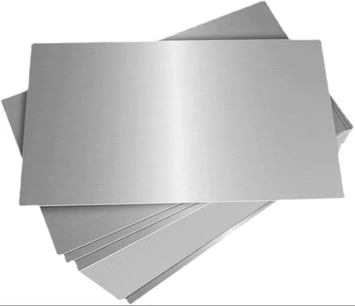

Buy Bulk Wholesale Stainless Steel Sheet From Indonesia
HS Code:
4412Xa Semi-finished products of stainless steel, rectangular
Stainless steel sheet is a high-quality flat-rolled metal product manufactured from premium stainless steel grades such as 201, 304, 316, and 430.

This versatile material is widely used in construction, kitchen equipment, food processing, interior design, marine fabrication, and architectural decoration
Offering a perfect balance between strength, hygiene, and visual elegance.
Stanless Steel Sheet Uses
| Grade | Description | Main Applications |
|---|---|---|
| Stainless Steel Sheet 430 | Ferritic stainless steel with good corrosion resistance and formability, thickness 0.3–2 mm. | Household appliances, kitchen panels, decorative trim, and automotive interiors. |
| Stainless Steel Sheet 201 | Austenitic stainless steel with high manganese content, cost-efficient alternative to 304, thickness 0.4–12 mm. | Furniture, kitchenware, food equipment, and architectural decoration. |
| Stainless Steel Sheet 304 | Most common austenitic stainless steel, excellent corrosion resistance and weldability, thickness 0.4–35 mm. | Food processing, chemical equipment, tanks, piping, and marine structures. |
| Stainless Steel Sheet 316 | Contains molybdenum for superior corrosion resistance, especially in saltwater or acidic environments, thickness 0.5–16 mm. | Marine industries, pharmaceuticals, chemical plants, and medical equipment. |
| Surface Finish (1B, 2B, F4, HL, BA, MR) | Various surface treatments: 1B/2B for industrial matte, F4 and HL (hairline) for brushed appearance, BA and MR for mirror-polished finish. | Interior panels, kitchen design, elevators, signage, and architectural cladding. |
Stanless Steel Sheet Size
| Size | Description | Main Applications |
|---|---|---|
| 1 × 2 meter (1000 × 2000 mm) | Standard compact sheet size, easy to handle and cut for small fabrication projects. | Furniture panels, kitchen tools, wall panels. |
| 4′ × 8′ (1220 × 2440 mm) | Most common industrial size, suitable for standard machinery and cutting layouts. | Construction panels, machinery covers, kitchen equipment. |
| 4′ × 10′ (1220 × 3048 mm) | Extended length sheet for larger surface coverage and fewer weld joints. | Wall cladding, tanks, and equipment housings. |
| 4′ × 12′ (1220 × 3657 mm) | Extra-long sheet ideal for continuous surfaces or wide fabrication work. | Architectural panels, industrial tanks, marine decks. |
| 5′ × 10′ (1524 × 3048 mm) | Wider format for large-scale manufacturing requiring fewer seams. | Elevator interiors, countertops, machine enclosures. |
| 5′ × 20′ (1524 × 6096 mm) | Extra-wide and long sheet for heavy-duty or architectural projects. | Building façades, industrial tanks, transport containers. |
| Coil 1220 × custom length | Continuous stainless steel coil with width 1220 mm, cut-to-length as required. | Roll forming, stamping, continuous production lines. |
Indonesia Stainless Steel Sheet for Sale
Indonesia has emerged as one of growing stainless steel producers, supported by its rapidly expanding metal processing industry and access to high-quality raw materials.In advanced rolling mills and precision finishing technology, Indonesia holds a strong position in supplying high-quality stainless steel sheets to global markets.
Its strategic geographical location in Southeast Asia enables efficient export logistics and shorter shipping routes, reducing lead times and transportation costs for international buyers.
Combined with modern manufacturing facilities, skilled metalworkers, and strict quality control standards, Indonesia delivers stainless steel sheets with consistent thickness, smooth surface finish, and superior corrosion resistance.
This solid industrial foundation makes Indonesia a reliable and competitive source for stainless steel sheet products worldwide.
Get Premium Stainless Steel Sheet for Sale
Are you looking for a reliable Indonesia bulk wholesale manufacturer and supplier of Stanless Steel Sheet for your needs?You’ve come to the right place! Contact us at OneWholesaleIndo.com, and we will be happy to provide the right solution tailored to your needs.